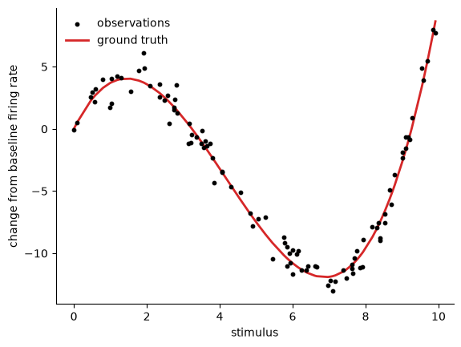
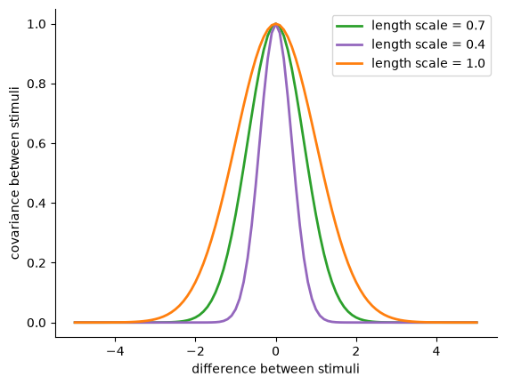
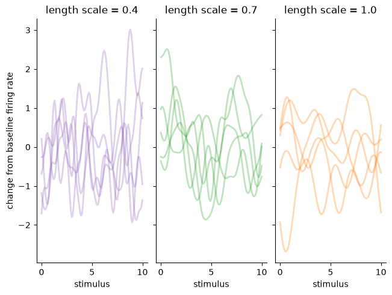
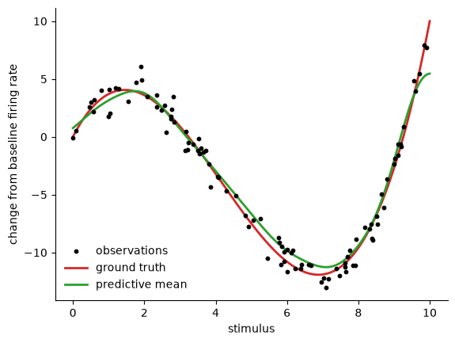
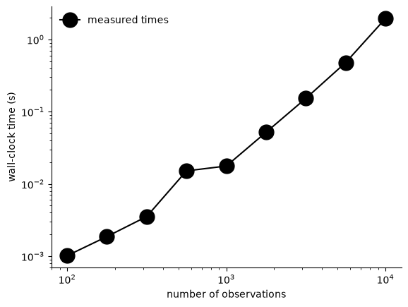
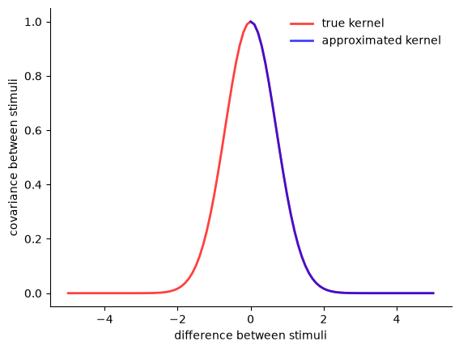
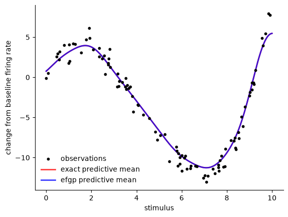
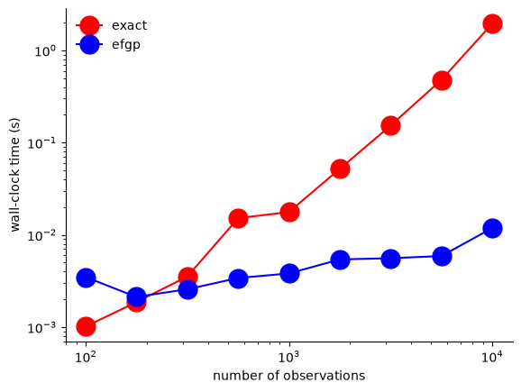

Download
Download this notebook: efgp.ipynb!
Gaussian Process Regression in NeMoS!#
Gaussian Processes (GPs) \(^{[1]}\) are a powerful model class used in neuroscience to describe low-dimensional tuning curves and neural trajectories. However, they have been historically difficult to fit to large-scale datasets due to the poor scaling behavior of traditional fitting approaches. In this notebook, we illustrate how NeMoS leverages recent advances in the GP literature to enable rapid and accurate inference of the GP predictive mean for neural data.
import jax
jax.config.update('jax_enable_x64', True)
import jax.numpy as jnp
import jax.random as jr
import matplotlib as mpl
import matplotlib.pyplot as plt
mpl.rcParams['axes.spines.right'] = False
mpl.rcParams['axes.spines.top'] = False
import nemos as nmo
from nemos.basis import FourierGP
when do you want to use a GP?#
Let’s say we measure a neuron’s firing rate across many stimulus presentations with varying stimulus strength. Our goal is to learn this neuron’s tuning curve: a function which defines the neural firing rate in response to any stimulus strength. In this example, we’ve defined the ground truth tuning curve as a cubic function of the stimulus value and generated synthetic measurements corrupted by Gaussian noise.
def evaluate_tuning(stimulus):
return 0.2 * (stimulus ** 3) - 2.5 * (stimulus ** 2) + 6 * stimulus
def generate_observations(key, n_obs, stim_min, stim_max, noise_sigma):
stimulus_key, subkey = jr.split(key)
obs_stimuli = jr.uniform(
stimulus_key,
shape = (n_obs,),
minval = stim_min,
maxval = stim_max
)
true_firing_rate = evaluate_tuning(obs_stimuli)
firing_rate_key, subkey = jr.split(subkey)
firing_rate_noise = jr.normal(firing_rate_key, shape = (n_obs,)) * noise_sigma
obs_firing_rate = true_firing_rate + firing_rate_noise
return obs_stimuli, obs_firing_rate, true_firing_rate
key = jr.key(seed = 0)
n_obs = 100
stim_min = 0
stim_max = 10
noise_sigma = 1
observations = generate_observations(key, n_obs, stim_min, stim_max, noise_sigma)
obs_stimuli, obs_firing_rate, true_firing_rate = observations
n_pred = 300
pred_stimuli = jnp.linspace(stim_min, stim_max, n_pred)
fig, axes = plt.subplots(1, 1)
axes.scatter(
obs_stimuli,
obs_firing_rate,
s = 10,
c = 'k',
label = 'observations',
zorder = 5
)
sorted_indices = jnp.argsort(obs_stimuli)
axes.plot(
obs_stimuli[sorted_indices],
true_firing_rate[sorted_indices],
lw = 2,
c = 'tab:red',
label = 'ground truth'
)
axes.set_xlabel('stimulus')
axes.set_ylabel('change from baseline firing rate')
axes.legend(frameon = False)
<matplotlib.legend.Legend at 0x7f283435d580>

how does a GP work?#
A GP makes a prediction for the distribution of functions that are compatible with our prior beliefs as well as the observed data. Here, we’ll just focus on the GP’s predictive mean, or the average of the GP’s predicted distribution of functions. Critically, our prior beliefs determine what types of functions are reasonable predictions, and these prior beliefs are entirely specified by choosing a kernel.
The kernel tells us how similar two points in the function should be. A standard choice of kernel is the squared exponential kernel, which enforces that nearby points should be more similar to each other than dispersed points. In other words, the squared exponential kernel is a way to specify our prior beliefs that the function is smooth. The length scale parameter determines the degree of smoothness we expect in our functions - a larger length scale implies a slower drop-off in covariance between more distant points, meaning the function must be smoother.
length_scale = 0.7
output_scale = 1
def se_kernel(
stim_1,
stim_2=jnp.array([0]),
length_scale=length_scale,
output_scale=output_scale
):
diff = stim_1[:, None] - stim_2[None, :]
return output_scale * jnp.exp(-0.5 * diff**2 / length_scale**2)
# odd count so the symmetric grid contains an exact 0 at index n_test_stimuli // 2;
# the kernel-approximation cell uses that as the zero-difference reference point.
n_test_stimuli = 101
test_stimuli_diffs = jnp.linspace(-0.5*stim_max, 0.5*stim_max, n_test_stimuli)
kernel_evals = se_kernel(test_stimuli_diffs)
smaller_length_scale_evals = se_kernel(test_stimuli_diffs, length_scale = 0.4)
larger_length_scale_evals = se_kernel(test_stimuli_diffs, length_scale = 1.0)
fig, axes = plt.subplots(1, 1)
axes.plot(
test_stimuli_diffs,
kernel_evals,
lw = 2,
c = 'tab:green',
label = 'length scale = 0.7'
)
axes.plot(
test_stimuli_diffs,
smaller_length_scale_evals,
lw = 2,
c = 'tab:purple',
label = 'length scale = 0.4'
)
axes.plot(
test_stimuli_diffs,
larger_length_scale_evals,
lw = 2,
c = 'tab:orange',
label = 'length scale = 1.0'
)
axes.legend()
axes.set_xlabel('difference between stimuli')
axes.set_ylabel('covariance between stimuli')
Text(0, 0.5, 'covariance between stimuli')

To get more intuition about how the choice of kernel specifies a prior over functions, we can draw samples from these GPs with varying length scale!
n_stimuli_range = 101
stimuli_range = jnp.linspace(stim_min, stim_max, n_stimuli_range)
base_key = jr.key(seed = 123)
sampling_keys = jr.split(base_key, 3)
n_function_samples = 5
mean_values = jnp.zeros(n_stimuli_range)
jitter = 1e-6 * jnp.eye(n_stimuli_range)
K_medium = se_kernel(stimuli_range, stimuli_range) + jitter
samples_medium = jr.multivariate_normal(
sampling_keys[0],
mean_values,
K_medium,
shape = (n_function_samples, )
)
K_small = se_kernel(stimuli_range, stimuli_range, length_scale = 0.4) + jitter
samples_small = jr.multivariate_normal(
sampling_keys[1],
mean_values,
K_small,
shape = (n_function_samples, )
)
K_large = se_kernel(stimuli_range, stimuli_range, length_scale = 1.0) + jitter
samples_large = jr.multivariate_normal(
sampling_keys[2],
mean_values,
K_large,
shape = (n_function_samples, )
)
fig, axes = plt.subplots(1, 3, sharex = True, sharey = True, layout = 'constrained')
axes[0].plot(
stimuli_range,
samples_small.T,
lw = 2,
c = 'tab:purple',
alpha = 0.3
)
axes[0].set_title('length scale = 0.4')
axes[0].set_xlabel('stimulus')
axes[0].set_ylabel('change from baseline firing rate')
axes[1].plot(
stimuli_range,
samples_medium.T,
lw = 2,
c = 'tab:green',
alpha = 0.3
)
axes[1].set_title('length scale = 0.7')
axes[1].set_xlabel('stimulus')
axes[2].plot(
stimuli_range,
samples_large.T,
lw = 2,
c = 'tab:orange',
alpha = 0.3
)
axes[2].set_title('length scale = 1.0')
axes[2].set_xlabel('stimulus')
Text(0.5, 0, 'stimulus')

Once we specify our prior beliefs by choosing a kernel, finding the predictive mean of the GP is remarkably simple! When we try it out on the synthetic dataset from above, we can see that the GP is doing a fairly good job at capturing the relationship between the stimulus strength and the neural firing rate.
def compute_predictive_mean(
pred_stimuli,
obs_stimuli,
obs_firing_rate,
noise_sigma
):
n_obs = obs_stimuli.shape[0]
noise_matrix = (noise_sigma**2) * jnp.eye(n_obs)
K_obs = se_kernel(obs_stimuli, obs_stimuli) + noise_matrix
K_cross = se_kernel(pred_stimuli, obs_stimuli)
cfac = jax.scipy.linalg.cho_factor(K_obs)
w = jax.scipy.linalg.cho_solve(cfac, obs_firing_rate)
mu_pred = K_cross @ w
return mu_pred
fig, axes = plt.subplots(1, 1)
axes.scatter(
obs_stimuli,
obs_firing_rate,
s = 10,
c = 'k',
label = 'observations',
zorder = 5
)
axes.plot(
pred_stimuli,
evaluate_tuning(pred_stimuli),
lw = 2,
c = 'tab:red',
label = 'ground truth'
)
mu_pred = compute_predictive_mean(
pred_stimuli,
obs_stimuli,
obs_firing_rate,
noise_sigma
)
axes.plot(
pred_stimuli,
mu_pred,
color = 'tab:green',
lw = 2,
label = 'predictive mean'
)
axes.set_xlabel('stimulus')
axes.set_ylabel('change from baseline firing rate')
axes.legend(frameon = False)
<matplotlib.legend.Legend at 0x7f281c3e6db0>

what’s the problem?#
Although computing the predictive mean is quite simple, it requires inverting an \(n \times n\) matrix, where \(n\) is the number of observations. This is an \(\mathcal{O}(n^3)\) operation, which becomes prohibitive for increasingly large neuroscientific datasets.
Attention
For timing comparisons in this notebook, we will use the ability to compile functions ahead-of-time in jax.
This allows us to compare the pure runtime of GP inference approaches without timing artifacts due to compilation time.
In real-world uses, the compilation time is typically negligible relative to the inference time, especially as datasets get larger.
import time
def compile(func, *args, **kwargs):
"""Compile ``func`` ahead of time for the shapes of the given arguments.
``jax.jit`` compiles on the first call, so timing that call would include tracing
"""
return jax.jit(func).trace(*args, **kwargs).lower().compile()
dataset_sizes = jnp.logspace(2, 4, num = 9, dtype = int)
times = []
for (i, size) in enumerate(dataset_sizes):
key = jr.key(seed = i)
observations = generate_observations(
key,
size,
stim_min,
stim_max,
noise_sigma
)
stimuli, firing_rate, true_firing_rate = observations
compiled = compile(
compute_predictive_mean,
pred_stimuli,
stimuli,
firing_rate,
noise_sigma
)
start_time = time.perf_counter()
mu_pred = compiled(
pred_stimuli,
stimuli,
firing_rate,
noise_sigma
).block_until_ready()
inference_time = time.perf_counter() - start_time
times.append(inference_time)
times = jnp.array(times)
fig, axes = plt.subplots(1, 1, sharex = True)
axes.plot(
dataset_sizes,
times,
marker = '.',
ms = 30,
c = 'k',
label = 'measured times'
)
axes.set_yscale('log')
axes.set_xscale('log')
axes.set_ylabel('wall-clock time (s)')
axes.set_xlabel('number of observations')
axes.legend(frameon = False)
<matplotlib.legend.Legend at 0x7f27e413dca0>

what do we do?#
Increasing the efficiency of GP regression has been a research topic for several years. Equispaced Fourier Gaussian Processes (EFGP) is a recently developed fast algorithm for GP regression which leverages a basis function approximation to eliminate the \(\mathcal{O}(n^3)\) matrix inversion required for standard GP regression \(^{[2]}\). By using \(m \ll n\) basis functions, this leads to dramatic improvements in inference time. Critically, this algorithm guarantees approximation of the kernel to a user-specified tolerance!
Attention
As the user-specified tolerance (eps) decreases towards 0, the kernel approximation gets better.
However, this also inflates the number of basis functions \(m\) used for inference and mitigates the efficiency of EFGP.
Extremely small values for eps should therefore be avoided whenever possible.
bounds = (stim_min, stim_max)
eps = 1e-4
basis = FourierGP(
lengthscale=length_scale,
bounds=bounds,
eps=eps,
variance=output_scale
)
Phi = basis.evaluate(test_stimuli_diffs)
K_pred_approx = Phi @ Phi.T
half_index = test_stimuli_diffs.shape[0] // 2
approx_kernel = K_pred_approx[half_index]
fig, axes = plt.subplots(1, 1)
axes.plot(
test_stimuli_diffs,
kernel_evals,
lw = 2,
c = 'r',
label = 'true kernel',
alpha = 0.75
)
axes.plot(
test_stimuli_diffs,
approx_kernel,
lw = 2,
c = 'b',
label = 'approximated kernel',
alpha = 0.75
)
axes.set_xlabel('difference between stimuli')
axes.set_ylabel('covariance between stimuli')
axes.legend(frameon = False)
<matplotlib.legend.Legend at 0x7f27a8215460>

With such a high-quality approximation to the kernel, the EFGP approximate predictions are practically indistinguishable from the exact GP prediction.
def compute_efgp_mean(
pred_eval,
obs_eval,
obs_firing_rate,
noise_sigma
):
n_weights = obs_eval.shape[1]
noise_matrix = (noise_sigma**2) * jnp.eye(n_weights)
augmented_K_obs = (obs_eval.T @ obs_eval) + noise_matrix
cfac = jax.scipy.linalg.cho_factor(augmented_K_obs)
beta = jax.scipy.linalg.cho_solve(cfac, obs_eval.T @ obs_firing_rate)
w = (obs_firing_rate - obs_eval @ beta) / (noise_sigma ** 2)
K_cross = pred_eval @ obs_eval.T
mu_pred = K_cross @ w
return mu_pred
fig, axes = plt.subplots(1, 1)
axes.scatter(
obs_stimuli,
obs_firing_rate,
s = 10,
c = 'k',
label = 'observations',
zorder = 5
)
mu_pred = compute_predictive_mean(
pred_stimuli,
obs_stimuli,
obs_firing_rate,
noise_sigma
)
axes.plot(
pred_stimuli,
mu_pred,
color = 'r',
lw = 2,
label = 'exact predictive mean',
alpha = 0.75
)
pred_eval = basis.evaluate(pred_stimuli)
obs_eval = basis.evaluate(obs_stimuli)
approx_mu_pred = compute_efgp_mean(
pred_eval,
obs_eval,
obs_firing_rate,
noise_sigma
)
axes.plot(
pred_stimuli,
approx_mu_pred,
color = 'b',
lw = 2,
label = 'efgp predictive mean',
alpha = 0.75
)
axes.set_xlabel('stimulus')
axes.set_ylabel('change from baseline firing rate')
axes.legend(frameon = False)
<matplotlib.legend.Legend at 0x7f2774711f70>

However, we are able to achieve such high-quality predictions much more efficiently due to the use of a small set of basis functions!
dataset_sizes = jnp.logspace(2, 4, num = 9, dtype = int)
efgp_times = []
for (i, size) in enumerate(dataset_sizes):
key = jr.key(seed = i)
observations = generate_observations(
key,
size,
stim_min,
stim_max,
noise_sigma
)
stimuli, firing_rate, true_firing_rate = observations
pred_eval = basis.evaluate(pred_stimuli)
obs_eval = basis.evaluate(stimuli)
compiled = compile(
compute_efgp_mean,
pred_eval,
obs_eval,
firing_rate,
noise_sigma
)
start_time = time.perf_counter()
mu_pred = compiled(
pred_eval,
obs_eval,
firing_rate,
noise_sigma
).block_until_ready()
inference_time = time.perf_counter() - start_time
efgp_times.append(inference_time)
efgp_times = jnp.array(efgp_times)
fig, axes = plt.subplots(1, 1, sharex = True)
axes.plot(
dataset_sizes,
times,
marker = '.',
ms = 30,
c = 'r',
label = 'exact'
)
axes.plot(
dataset_sizes,
efgp_times,
marker = '.',
ms = 30,
c = 'b',
label = 'efgp'
)
axes.set_yscale('log')
axes.set_xscale('log')
axes.set_ylabel('wall-clock time (s)')
axes.set_xlabel('number of observations')
axes.legend(frameon = False)
<matplotlib.legend.Legend at 0x7f27e40d1f70>

References#
[1] Rasmussen C. E. and Williams C. K. I. Gaussian Processes for Machine Learning. (2006). The MIT Press